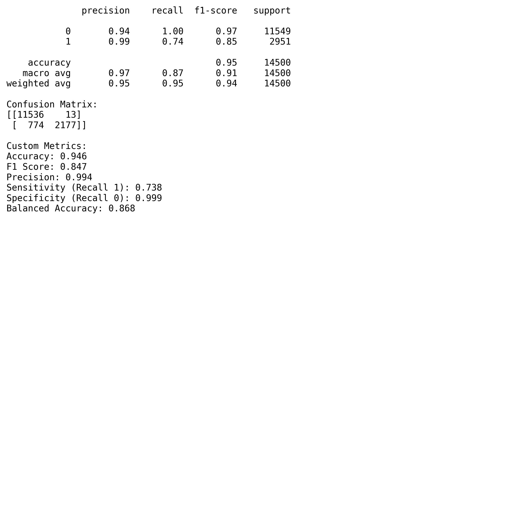
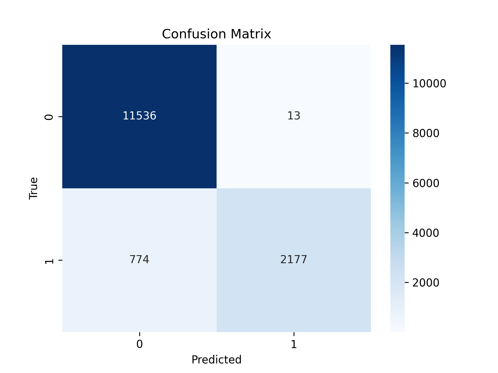
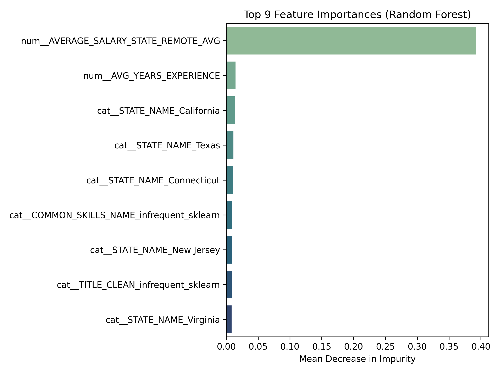

About
Problem
What does the job market look like, and how can we refine our skills to better match the career we want?
Introduction
To answer this question, our group began by analyzing information on how the job market has evolved over recent years. A major change that has impacted the workforce is COVID-19, which has accelerated shifts toward remote work, automation, and digital evolution. During the pandemic, organizations were forced to adapt quickly, which in turn altered the way the workplace was structured and facilitated further technological implementation. Now that it’s been a few years since the pandemic, how are the working conditions distributed within the workforce? According to (Half (2024)), 26% of U.S. workers are fully remote while 29% are hybrid. This article also highlights that altough remote has decline since the pandemic, it still very much remains as an option in the workforce. A survey was conducted an 50% of workers said they would quit if they had to return to the office full-time. Similarly, workers also mentioned that they would accept a lower salary for remote options. This demonstrates how important working conditions are for employees, therefore it should be something management considers. This article also compared job titles to flexibility of work conditions. They discovered that 31% of newly created senior-level roles were hybrid, while 15% were fully remote. By analyzing the market, we can adapt effectively and refine our strategies; therefore, we need to assess whether this element of a job posting should be something to consider.
Artificial intelligence (AI) is a technology that allows computers and machines to mimic human abilities such as learning, understanding, solving problems, making decisions, being creative, and operating independently (Stryker (2024)). Over the next several years, generative AI will become the main focus of AI researchers and enthusiasts. Generative AI is a type of technology that can produce original text, images, and videos. With the rising popularity of generative AI, many companies are faced with the question of how to walk the line between technological advancements and ethical responsibility. Advocates of AI claim that when implemented properly, AI can boost productivity, accelerate product development, and improve business decision-making. In 2024, the International Monetary Fund estimated that 40% of jobs around the world will be affected by AI. Tech experts hypothesize that industries and sectors such as cybersecurity, financial services, and manufacturing are likely to be affected (Panel (2021)). On the other hand, some argue that while job displacement is inevitable, AI will also create new jobs. According to Lee, Samanta, and Lee Lee, Samanta, and Lee ((2024)), AI will not eliminate jobs but instead will reshape career structures. Even so, there are still job types that can be at risk of being replaced. An example of a high-risk job would be one that involves repetition and predictable tasks, such as telemarketing and a customer support specialist. On the other hand, the more resilient jobs are those that require emotional intelligence or creative problem-solving. Some examples of these careers are teachers, writers, and employees with skilled trades like plumbers. Another important aspect to consider is that there will be some jobs where AI is used in conjunction with their regular responsibilities; an example of this is teachers. Teachers may use AI to grade papers, but they still will need to perform their regular tasks, like lecturing and mentoring students. Overall, Lee, Samanta, and Lee (2024) conclude that the rise of AI has a twofold effect: potential job displacement and the creation of new opportunities.
The double-edged effect appears to be the sentiment for Ito Ito ((2025)), where she looks into the impact of job postings since OpenAI’s launch in 2022. Ito mentioned that she believed it would take a couple of years to truly see the impact of AI on the job market, but when evaluating in 2025, she found that AI’s revolution may have already begun. To confirm her hypothesis, Ito asked for Revelio Labs, an analytics provider, to see whether they can find jobs where AI has already replaced them. They first began by looking at current job descriptions to see which responsibilities AI could already replace or augment. Ultimately, they found that over the past three years, there was a 19% decline in jobs involving tasks that can be performed by AI. This drop was mainly due to companies hiring fewer roles that AI can handle. They also classified the jobs online into three categories: high exposure roles, low exposure roles, and those in between. Fundamentally, jobs with the highest exposure to AI started to disappear faster from online job postings. According to Revelio Labs, the jobs with the highest exposure are the ones that manage various technical functions like IT specialists, data engineers, and database administrators. On the other hand, the jobs with the lowest exposure are in-person roles like restaurant manager or mechanic. Essentially, there is data showing that AI has already disrupted the job market, but the article also emphasizes the point that its projection is still unknown. Experts cannot determine the sustainability of replacing humans with AI, especially when it comes to the quality of service that is produced.
From a geographic perspective, McElheran et al. McElheran et al. ((2024)) offers important insight into how AI adoption appears to be concentrated in select cities. This academic journal examines the 2018 Annual Business Survey to not only find out geographically where the highest AI implementation is, but also which firms are leading the charge. The data used for their analysis looks at 850,000 U.S. firms from early AI adoption to now. The journal classifies AI adoption by whether a firm has used at least one AI-related technology, including: machine learning, machine vision, automated guided vehicles, natural language processing, and voice recognition. Their findings showed that San Fransico was ranked as the top adopter of AI especially when it came to larger firms. Other notable cities with a high adoption rate were Nashville, TN; San Antonio, TX; and Tampa, FL. These findings suggest that early adopters of AI are large firms or high-growth startups in regions where there is more AI exposure.
Purpose
With this in mind, our research will look at the rising trends within the job market, with a particular focus on roles that align with our own career interests. This includes analyst positions, some of which may be influenced by advances in AI. We will also look at what working conditions, more specifically remote versus not remote jobs.
References
title: Market Trends format: html: code-fold: true toc: true toc-depth: 2 exeucte: eval: false echo: true freeze: auto —
Introduction
Our group has decided to evaluate the distribution of jobs related to techonology across the United States. In order to do this, we used a count of any jobs containing the word “analyst” and categorized them by state. The results of this are shown below.
Analyst Job Distribution Across the United States
According to the visual above, Texas and California are the two clear leaders in the total amount of jobs being offered that contain the word “analyst” in the title. Additionally, eastern states show a considerably greater amount of these jobs compared to western states.
The chart above displays the salary breakdown between states for job postings impacted and not impacted by AI. The size of the data points illustrates the number of job postings that each state has. Interestingly, both Texas and California have the largest amount of job postings not affected by AI. We can conclude that a possiblity for this is that in those tech hubs, the jobs AI can replace decreased in demand.
Analyst Job Distribution Across Cities in the United States
New York City is the clear leader in analyst jobs available. Another insight is that Texas has 3 cities in the top 10, which indicates a strong job market. Something that surprised us, is that San Francisco finishes lower than expected by rounding out the bottom of the top 10.
Remote VS Onsite job
Remote Job Distribution by General Industry
In terms of the Remote Job Distribution by general industry, the top 3 industries are Real Estate and Rental and Leasing, Information, Finance and Insurance. As we can see even the traditional industries such as manufacturing, educational services starte to have higher remote job proportion, which means the remote work nowadays has already became a widespread jobs or requirements across multiple industries.
###Top Industries: Remote job Trends Over time
Take a dive into the Top industries over time with specific industries, in general, this plot displays monthly trends in job postings for from May 2024 to September 2024. As we can see in here, the remote job ratio was represented by the y-axis, which is the proportion of job postings marked as remote out of total postings in each industry per month. Higher remote ratio, represents their have more remote job opportunities open in each industry.
Indeed, we can see the general trend in this plot as the remote job among different industries, which reaches the peak in Auguest 2024 and then drop siginificantly in September, which suggests that the many companies end their summer recruitings. As we can see the real estate and rental industry goes from high and crash in September. In contrast, the Finance and Insurance industry has higher stability， which has consistent job postings from May to September.
 From the above plot result, we can see that the remote job ratio trend started low in May, then continue drop low in June, then reached the peak in August (31%), after that drop low in September. In compare with the trend alighed with gray area: job postings are also have more postings in Auguest and less in September.
From the above plot result, we can see that the remote job ratio trend started low in May, then continue drop low in June, then reached the peak in August (31%), after that drop low in September. In compare with the trend alighed with gray area: job postings are also have more postings in Auguest and less in September.
 From the above plot result, we can see that the remote job ratio trend started low in May, gradually increase in June, then reached the peak in July (33%), after that gradually drop low August. The job posting area remained high and stable through july, which is friendly for people who are seek for remote jobs.
From the above plot result, we can see that the remote job ratio trend started low in May, gradually increase in June, then reached the peak in July (33%), after that gradually drop low August. The job posting area remained high and stable through july, which is friendly for people who are seek for remote jobs.
 From the above plot result, we can see that the remote job ratio trend started high (43%) in May, drop in June, then rebound in July then reached the peak in August (53%), after that has a significantly drop in September(near 0). The job posting area remained comparable stable, which has high volumn in May and June, then has a siginificant drop in July and modest increase in Auguest and September. The differences between Job posting
From the above plot result, we can see that the remote job ratio trend started high (43%) in May, drop in June, then rebound in July then reached the peak in August (53%), after that has a significantly drop in September(near 0). The job posting area remained comparable stable, which has high volumn in May and June, then has a siginificant drop in July and modest increase in Auguest and September. The differences between Job posting
From above choreleograph, we can see that the green color depth represents the remote jobs proportions to their job postings, and with the average salary and average job experiences. To be more clearly, we can see that the Maine, Vermont, Alaska and Colorado have higher remote ratio, which represents their high demands on remote jobs souther state on the othe hand has lighter remote ratio, which represents that there are fewer remote job demands in these regions’ industries.
Random Forest results
  As the two plots displayed a clear results for random forest results, our group has set our target variable for predict people’s preferences on Remote versus Onsite job, where 1 represents a remote job and 0 represents onsite. We also had a set of independent variables, including as: ‘AVG_YEARS_EXPERIENCE’, ‘AVERAGE_SALARY_STATE_REMOTE_AVG’, ‘IS_INTERNSHIP’, ‘STATE_NAME’, ‘NAICS_2022_2_NAME’(industry) ‘EDUCATION_LEVELS_NAME’, ‘COMMON_SKILLS_NAME’, ‘SOFTWARE_SKILLS_NAME’, ‘TITLE_CLEAN’ (occupation). Meanwhile, we split the data into training and testing sets using an 80/20 ratio to ensure generalizability, This means 20% of the data will go into the test set, and 80% will go into the training set. Then we conduct the randam forest model analysis. According to plots, we can conclude the accuracy reached to 94.6%;F1 score as 84.7%, which reflects the robust balance between precision and recall; the precision as 99.4%, which means it has highly accurate rate on predict the results;the sensitivity for class1 as 73.8%, which means it correctly identified the 74% people who pick remote; the sensitivity for class 0 even reached to 99.9%, which means almost all the people who choose non-remote job has correctly classified; balanced accuracy as 86.8%, which represents there is a balance performance between both cases. From the confusion matrix, there has a detailed display, which represents the model correctly predicts 11536 people who choose onsite jobs with only 13 false positives, and it also orrectly predicts 2177 people who choose remote jobs with 774 missed results.
One major limitation is class imbalance. Remote jobs (class 1) are the minority, which leads the model to perform less effectively on them.To counter this, we used class_weight=‘balanced’ in our Random Forest to give more weight to underrepresented classes. We also built a preprocessing pipeline using ColumnTransformer for encoding categorical and scaling numerical features.Still, further optimization is needed. we recommended three ways to overcome this issue in the future study: Adjusting sample sizes;Tuning model hyperparameters, like n_estimators and max_categories; experimenting with resampling techniques; add crossvalidation steps to void overfitting and ensure the final results’ accuracy.
Featured Importance
 Based on the above plot, we can see the top 9 features could be essential in predicting the peoples’prefrences on remote or onsite jobs, we can see the top three essential features are average remote salary by state, Average years of experience and location state-California. These three features can be easily interpreted as the job’s salary, job’s requirement for year experiences and location are vital elements that impact people’s decision on onsite or remote job types, peple prioritize jobs with high salary and better geographic location
The radar chart above displays each individual evaluation of our skills for the top five skills on demand for analyst roles.
Recomendations
Given our analysis above, we have decided to focus on some of the key actions and learning goals that each of us can take in order to further our chances of landing a high quality position in our chosen industry.
SQL
Beginner
We recommend using tools such as SQLBolt to begin developing a foundational understanding of basic syntax, queries, and selecting columns from datasets. This will build familiarity with the program itself and develop a confidence in import and simple manipulation of data.
Intermediate
Next, we will incorporate real-world data sets (ex. Kaggle) to begin creating analysis. As an example, you could utilize sales data, new customers, inventory levels, certain trends over time, etc. Utilizng applications such as LinkedIn Learning or Coursera can assist with this.
Advanced
At this stage, we will aim for constructing pipelines that are sufficient from beginning to end and that integrate a prouction quality result. As a final step, DataLemur provides candidates with interview questions that correspond to SQL and have been confirmed by various companies such as Amazon, Google, etc.
OneStream
It is important to note that this is a private software application so receiving quality training will be difficult without being sponsored by a company.
Beginner
Youtube is the best resource for beginning to familiarize yourself with the main functionality and goals of the software. The company does have their own channel, so it would be advised to watch their videos and learn more about what the application does and how it works.
Intermediate
Consider purchasing an online course through Udemy or Keyteach. While this does require personal spending, it would be the easiest way to gain an understanding without requiring an official license to operate the software. This would help to practice working with the application and exploring key concepts.
Advanced
This stage would be difficult, because you would need access to the software in order to achieve an advanced level. If you are employed (especially in the financial services industry) consider asking IT for access. There you can work more on complicated structures such as macros and visualization.
AWS
Beginner
AWS offers free tier accounts where users can begin learning the basic structure of the applications that are offered. Additionally, there are various free courses that are offered by AWS Academy.
Intermediate
Incorporate real world data within AWS to create a storage structure, run queries, and visualize data. Additionally, you can reference Youtube or LinkedIn learning to learn more about EC2 capabilities and Quicksight (for visualization).
Advanced
Consider learning more about best practices and cost structuring, which will be crucial components of AWS design in a real world company. The goal of this is to begin optimizing your pipelines to make sure that they are production quality. To achieve this, consider completing the AWS Certified Data Analytics course.
Power BI
Beginner
At the beginner level it is important to understand the basic UI interface of the application, such as importing data and generating visuals (bar charts, line charts, cards, etc.). Microsoft Learn can help to achieve this with their beginner course.
Intermediate
At this point, you should have the ability to use more complicated processes such as data cleaning, DAX functions, and establishing relationships between multiple datasets. Again, Microsoft Learn has courses called “Design Power BI reports” and “Configure Power BI report filters” that will help achieve this competency.
Advanced
By now, you should be able to connect your dashboard to other applications like SQL or APIs. Your dashboards should have multiple pages, which include dynamic formatting and the ability to automatically refresh.
Office 365
This will be broken down into 3 of the most common applications with an emphasis on Excel. Microsoft 365 is the recommended training tool, as it has learning courses available for all levels.
Beginner
Excel: Standard formulas are used such as SUMIF and VLOOKUP. There is familarity with pivot charts and conditional formatting. Outlook: User has the ability to schedule meetings and establish designated email folders. PowerPoint: There is an understanding of presentation structure, as well as formatting and placement of text and visuals.
Intermediate
Excel: Power Query, Data Validation tabs, Index formulas, KPI dashboards with slicers. Outlook: Creating shared calendars and group inboxes. PowerPoint: Linking visuals from other applications, such as Excel.
Advanced
Excel: VBA and macros combined with dynamic visuals. PowerPoint: Creating custom templates to align with a company’s brand.
Hello
About this site
{{< embed ADAM georgraphic_analysis copy.ipynb >}} {{< embed georgraphic_analysis.ipynb >}} ## References